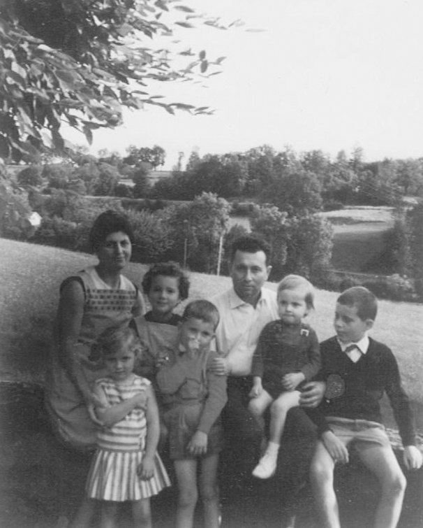
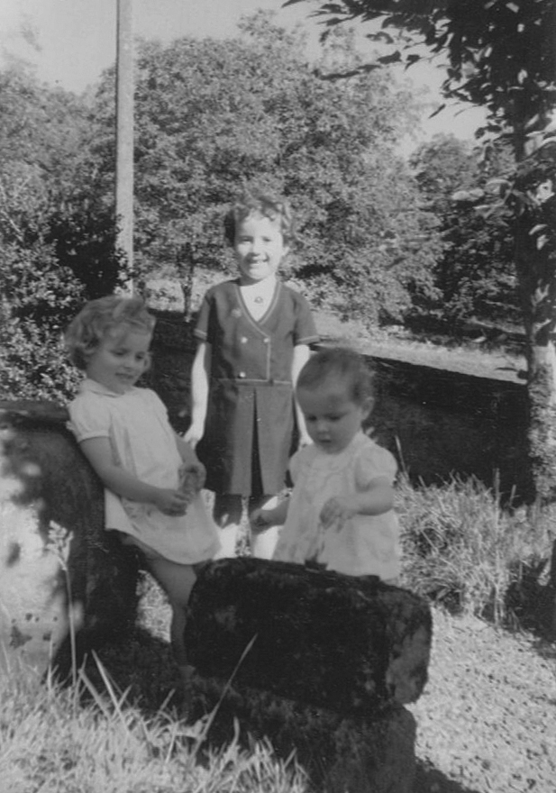
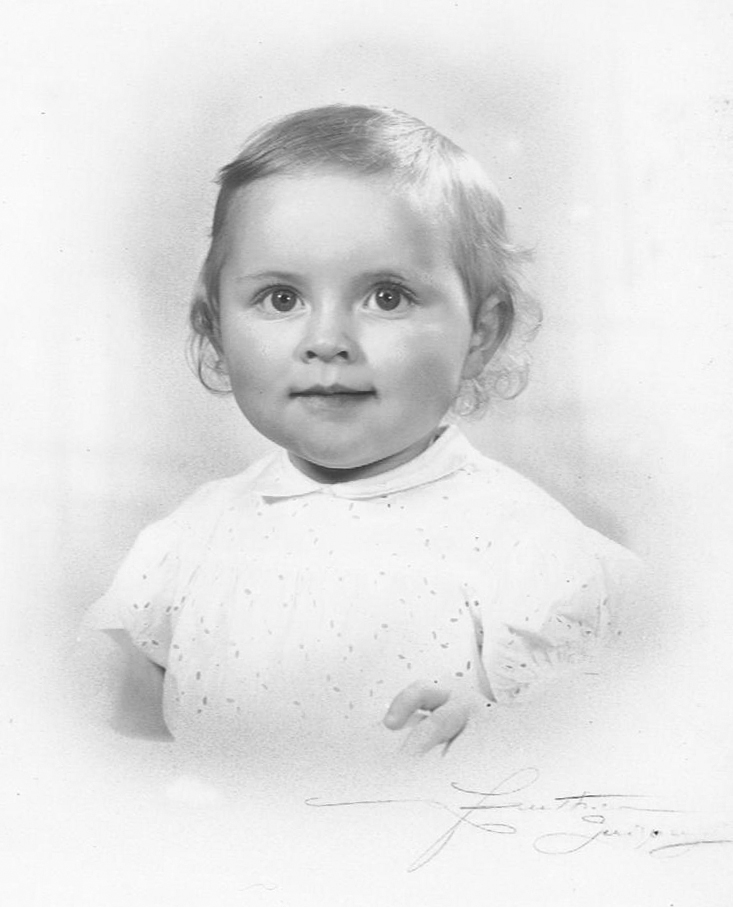

Des Mots à la Plume
Ecrire sa vie, ses mémoires...
Extrait de « Ma » biographie

Quatrième d’une fratrie de six enfants, père et mère agriculteurs,
j’ai vécu une enfance heureuse mais difficile...
Peu de contacts avec l’extérieur, la ferme se trouvait un peu à l’écart
du bourg de Sorges, situé à une vingtaine de kilomètres au nord de Périgueux,
capitale du Périgord.
« Heureuse, mais difficile ». Je retiens les mots de mon père, arrivé presque
au terme de sa vie : « On vous a privés de beaucoup de choses, mais nous vous
avons aimés tous autant, sans aucune distinction ».
Je n’ai pas souvent vu rire mon père, la pénibilité des travaux de la ferme,
le métier tributaire des aléas climatiques, les horaires à n’en plus finir,
rire de quoi dans ces conditions ?

Les vacances ? Nous n’en avions pas... En tous cas, pas tous ensemble.
Parfois, tous entassés dans la 404 familiale, qui sentait à plein nez l’odeur
du tabac froid des Gauloises que fumait mon père, nous allions déjeuner
chez mes grand-parents maternels. C’était souvent au moment des fêtes
religieuses, Noël, Rameaux ou Pâques.
Aussi, au moment des grandes vacances d’été, nous allions par paires
chez ces mêmes grand-parents passer une partie de nos vacances.
Là-bas... Le Breuil, c’était un peu le paradis...
... Aujourd’hui, j’ai passé la cinquantaine, mariée en secondes noces
avec un homme respectable, originaire de la Mayenne.
J’ai élevé mes trois enfants et ma fille aînée m’a permis
d’obtenir cette année le titre honorifique de « Mamie ».
Que la vie est belle !
Nous vivons sur Pellouailles-Les-Vignes, petit bourg
dans le Maine-et-Loire, tout près d’Angers.
J’ai toujours aimé lire (récits autobiographiques notamment),
dessiner également, passionnément...
Et aujourd’hui, je suis heureuse d’aller à votre rencontre...
Mes coordonnées :
Cathy Fayol-Mignot
3, rue de Cil
49112 Pellouailles-les-Vignes
06 85 75 91 37
cathy542@orange.fr
